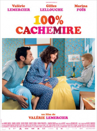

12 100% CACHEMIRE
- Critique
- Comédie


Aleksandra est rédactrice en chef d’un magazine féminin. Elle vit avec Cyrille, galeriste et les deux sont très heureux. Sauf qu’ils n’ont pas l’enfant dont ils rêvent. Pour cela, ils magouillent pour voir arriver un petit Russe de sept ans. Mais ça ne sera pas de tout repos…
100% cachemire est une comédie qui souffre de beaucoup trop de défauts pour plaire sur la durée. Quelques passages sont plus réussis mais l’ensemble manque vraiment de consistance. Même Valérie Lemercier en fait trop pour être vraiment drôle.
100% cachemire est une comédie qui souffre de beaucoup trop de défauts pour plaire sur la durée. Quelques passages sont plus réussis mais l’ensemble manque vraiment de consistance. Même Valérie Lemercier en fait trop pour être vraiment drôle.
- Timothée
- 09.12.2013, 22:28

 Henri tient un restaurant avec sa femme, Rita. Mais celle-ci meurt subitement, laissant Henri sous le choc et un peu perdu. Pour se faire aider, sa fille va faire appel à un « papillon blanc », une jeune femme résidente d’un foyer pour handicapés mentaux sui se trouve à proximité. Entre eux, une relation particulière va naître.
Henri tient un restaurant avec sa femme, Rita. Mais celle-ci meurt subitement, laissant Henri sous le choc et un peu perdu. Pour se faire aider, sa fille va faire appel à un « papillon blanc », une jeune femme résidente d’un foyer pour handicapés mentaux sui se trouve à proximité. Entre eux, une relation particulière va naître.

 Alors qu’Elsa devient Reine du royaume d’Arandelle, elle dévoile par accident son terrible secret (elle contrôle la neige et la glace). Laissant son peuple dans un hiver éternel, elle se retire dans la montagne. Sa sœur Anna va tout tenter pour contrer cette malédiction et la faire revenir…
Alors qu’Elsa devient Reine du royaume d’Arandelle, elle dévoile par accident son terrible secret (elle contrôle la neige et la glace). Laissant son peuple dans un hiver éternel, elle se retire dans la montagne. Sa sœur Anna va tout tenter pour contrer cette malédiction et la faire revenir…

 Ewa débarque aux Etats-Unis avec sa sœur Magda. Mais, à Ellis Island, cette dernière est considérée comme malade et doit rester en quarantaine. Ewa, elle, est sauvée par Bruno, un homme qui, malgré tous ses défauts, pourrait bien lui offrir la possibilité de retrouver sa sœur. Ewa n’a pas beaucoup d’autres choix…
Ewa débarque aux Etats-Unis avec sa sœur Magda. Mais, à Ellis Island, cette dernière est considérée comme malade et doit rester en quarantaine. Ewa, elle, est sauvée par Bruno, un homme qui, malgré tous ses défauts, pourrait bien lui offrir la possibilité de retrouver sa sœur. Ewa n’a pas beaucoup d’autres choix…


 En plein cœur du dix-neuvième siècle, les paysans allemands sont en proie à de grandes difficultés et tentent de survivre. De nombreuses familles décident de partir vers le Brésil, où un avenir radieux s’annonce. Jakob, lui, en rêve aussi, mais ce qui se passe dans sa famille ne va pas lui permettre…
En plein cœur du dix-neuvième siècle, les paysans allemands sont en proie à de grandes difficultés et tentent de survivre. De nombreuses familles décident de partir vers le Brésil, où un avenir radieux s’annonce. Jakob, lui, en rêve aussi, mais ce qui se passe dans sa famille ne va pas lui permettre…